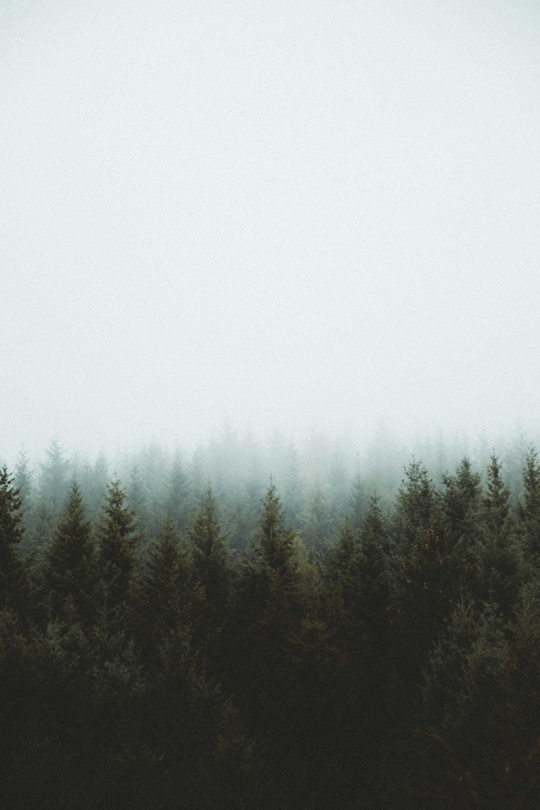
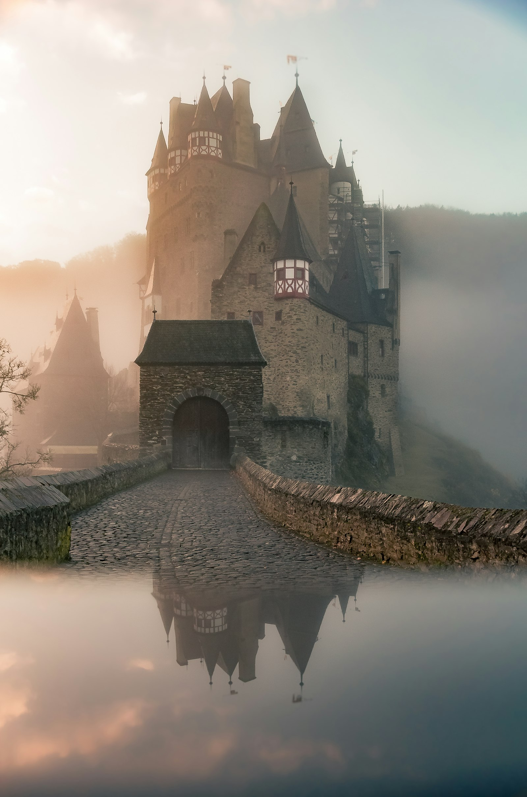
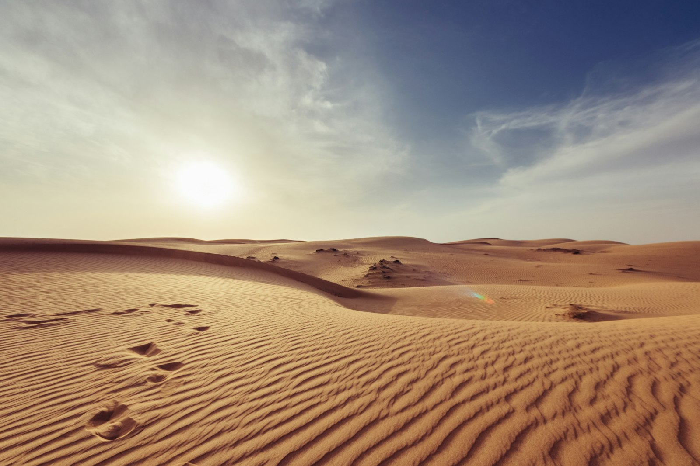

MODE 01
DRY RUN
Classic endless sprint across the flats. Jump the scrub. Don’t look back at the signal bars.
Play this modeCONNECTION LOST
The desert boots itself.
BROWSER EXPERIENCE GALLERY
The desert that appears when the net dies.
SIX MODES
Each mode is a different weather for the same runner — heat, night, iron rain, strata, ghosts, and a bar that does not forgive.

MODE 01
Classic endless sprint across the flats. Jump the scrub. Don’t look back at the signal bars.
Play this modeMODE 02
Moonlight cactus field. Slower hazards, longer shadows, a horizon that almost feels kind.
GALLERYMODE 03
Sky-iron falls in timed windows. Read the glow, commit early, or eat dust.
GALLERY
MODE 04
Dig-run hybrid. Collect strata markers while the ground keeps inventing new shelves.
GALLERY
MODE 05
Wi-Fi ghosts as obstacles — half-rendered towers that only exist while you’re looking.
GALLERY
MODE 06
One hit. No HUD. The score is the distance you refuse to admit you need.
GALLERYLIVE · DRY RUN
An on-page endless run. Touch or click also jumps. High score stays on this device.
SIGNAL RESTORED
WHAT IS OUTAGE
OUTAGE is a set of browser-native desert runs — no install, no account, no app store. Open the link and the flats are already moving. Dry Run is playable here; the other modes live as cinematic plates in the gallery.
FAQ
Yes. Dry Run runs in the browser with no account and no download.
Yes. Tap the stage to jump. The ambient desert scales down on smaller screens.
Night Drift through Zero Bar ship as gallery modes on this page. Dry Run is the live endless runner.
Optional and muted by default. The site is designed to read clean with audio off.